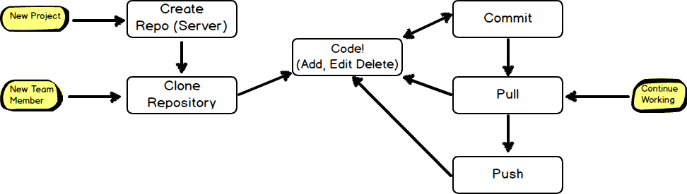

<!DOCTYPE html><html><head><meta charset="utf-8"><meta name="viewport" content="width=device-width, initial-scale=1, maximum-scale=1"><title>TKPPL | Remote (Push dan Pull)</title><link rel="stylesheet" type="text/css" href="bower_components/prism/themes/prism.css"><link rel="stylesheet" type="text/css" href="bower_components/todc-bootstrap-main/dist/css/bootstrap.min.css"><link rel="stylesheet" type="text/css" href="styles/main-presentation.css"></head><body></body></html><nav role="navigation" class="navbar navbar-default"><div class="container"><div class="navbar-header"><button type="button" data-toggle="collapse" data-target="presentation-chooser" class="navbar-toggle"><span class="sr-only"></span><span class="icon-bar"></span><span class="icon-bar"></span><span class="icon-bar"></span></button><a href="index.html" class="navbar-brand">BotNet</a></div><div id="presentation-chooser" class="collapse navbar-collapse"><ul class="nav navbar-nav"><li class="dropdown"><a data-toggle="dropdown" href="#" class="dropdown-toggle">Pilih Presentasi <b class="caret"></b></a><ul class="dropdown-menu"><li><a href="1-Introduction.html">Pengenalan Botnet</a></li><li><a href="2-CaraKerjaBotnet.html">Cara Kerja Botnet</a></li><li><a href="3-PresentasiDenganBespokeJS.html">Presentasi dengan Bespoke.JS</a></li><li><a href="4-SCRUM.html">SCRUM</a></li><li><a href="5-UserStories.html">User Stories</a></li><li><a href="6-Trello.html">Trello dan Bug Reporting</a></li><li><a href="7-PengenalanKontrolVersi.html">Kontrol Versi</a></li><li><a href="8-DasarKontrolVersi.html">Dasar Kontrol Versi</a></li><li><a href="9-Commit.html">Commit</a></li><li><a href="10-LogDanHistory.html">Log dan History</a></li><li><a href="6-TugasBeSpoke.html">Tugas Be Spoke</a></li><li><a href="11-TimeMachine.html">Time Machine</a></li><li><a href="12-PushDanPull.html">Push dan Pull</a></li><li><a href="13-Branching.html">Branching (Percabangan)</a></li><li><a href="14-GitFlow.html">GitFlow Workflow</a></li></ul></li></ul></div></div></nav><article id="presentation"><section><h1>Remote (Push dan Pull)</h1><h2>Bekerja dengan Server Git</h2><p>Teknik Kolaborasi TI</p></section><section><h2 class="bullet">Remote?</h2><hr><ul><li>Ketika berkolaborasi, biasanya kita perlu berbagi repository dengan orang lain</li><li>Repository yang berada di komputer kita dikenal dengan istilah <em>local repository</em></li><li>Repository yang berada di server (komputer lain) dikenal dengan istilah <em>remote repository</em></li></ul></section><section><h2 class="bullet">Remote Repository</h2><hr><ul><li>Bisa berupa kopi repository lokal yang diletakkan di server (contoh: Github)</li><li>Bisa juga berupa repository orang lain yang dibuka ke publik</li><li>Tidak terdapat banyak perbedaan ketika berkolaborasi dengan dua model di atas</li><li>Perbedaan hanya ada pada letak <i>remote repository</i> (di server vs komputer orang lain)</li><li>Disarankan gunakan server, agar orang dapat mengakses kode kapanpun di manapun</li></ul></section><section><h2 class="bullet"><a href="https://github.com">Github</a></h2><hr><ul><li>Layanan <i>hosting</i> repository git</li><li>Bukan hanya membantu menyimpan kode, tapi juga kolaborasi</li><li>Langsung ke <a href="https://github.com">github.com</a> untuk daftar</li></ul></section><section><h2>Membuat Repository Baru di Github</h2></section><section><h2>Alamat Repository Baru Github</h2></section><section><h2 class="bullet">Menghubungkan Repository Lokal dengan Remote</h2><p>Perintah utama:</p><code class="language-bash"><pre>$ git remote add &lt;nama&gt; &lt;alamat&gt;</pre></code><ol><li>Isikan <code class="inline language-bash">&lt;nama&gt;</code> dengan nama repository remote yang diinginkan</li><li>Nama remote utama biasanya "origin"</li><li>"origin" juga nama remote yang diberi git ketika melakukan clone repository lain</li><li>Isikan <code class="inline language-bash">&lt;alamat&gt;</code> dengan alamat repository remote</li><li>1 repository boleh punya banyak remote</li></ol></section><section><h2 class="bullet">Melihat Daftar Repository Remove</h2><code class="language-bash"><pre>$ git remote</pre></code><ol><li>Tambahkan parameter <code class="inline language-bash">-v</code> untuk melihat detil</li></ol></section><section><h2>Contoh Penggunaan Penambahan dan Daftar Repo Remote</h2><code class="language-bash"><pre># Belum ada remote
bert@FEBRONIA ~/Desktop/code/tib (master)
$ git remote

bert@FEBRONIA ~/Desktop/code/tib (master)
$ git remote -v

bert@FEBRONIA ~/Desktop/code/tib (master)
$ git remote add origin git@github.com:bertzzie/belajar-git.git
</pre></code></section><section><h2>Contoh Penggunaan Penambahan dan Daftar Repo Remote (cont.)</h2><code class="language-bash"><pre>#remote ditambahkan
bert@FEBRONIA ~/Desktop/code/tib (master)
$ git remote
origin

bert@FEBRONIA ~/Desktop/code/tib (master)
$ git remote -v
origin  git@github.com:bertzzie/belajar-git.git (fetch)
origin  git@github.com:bertzzie/belajar-git.git (push)
</pre></code></section><section><h2 class="bullet">Mengirimkan Data Repository ke Remote</h2><p>Perintah utama:</p><code class="language-bash"><pre>$ git push &lt;nama-remote&gt; &lt;nama-cabang&gt;</pre></code><ol><li>Jika remote menggunakan protokol https, bisa langsung mengirimkan data</li><li>Jika remote menggunakan protokol git, kita harus melakukan setup ssh dahulu</li><li>Ketika pertama kali push ke repo baru, gunakan opsi -u</li><li>Opsi -u: memberitahukan ke git bahwa ini adalah repo pusat (tempat orang berkontribusi)</li><li>Tanpa -u, pengguna repo lain tidak dapat langsung melakukan push / pull setelah clone</li></ol></section><section><h2>HTTPS / SSH?</h2></section><section><h2>HTTPS / SSH? (cont.)</h2><code class="language-bash"><pre># SSH
bert@FEBRONIA ~/Desktop/code/tib (master)
$ git remote -v
origin  git@github.com:bertzzie/belajar-git.git (fetch)
origin  git@github.com:bertzzie/belajar-git.git (push)

# HTTPS
bert@FEBRONIA ~/Desktop/code/tib (master)
$ git remote -v
origin  https://github.com/bertzzie/belajar-git.git (fetch)
origin  https://github.com/bertzzie/belajar-git.git (push)
</pre></code></section><section><h2 class="bullet">HTTPS / SSH? (cont.)</h2><hr><ul><li>Disarankan untuk menggunakan https untuk memudahkan</li><li>Kalau ingin pakai SSH, perlu membuat private dan public key dahulu (<a href="https://help.github.com/articles/generating-ssh-keys">tutorial</a>)</li><li>Kekurangan https: harus memasukkan username dan password github setiap kali ingin push</li><li>Kekurangan ssh: perlu setup tambahan sebelum bisa push</li></ul></section><section><h2>Contoh Penggunaan Git Push</h2><code class="language-bash"><pre>bert@FEBRONIA ~/Desktop/code/tib (master)
$ git push -u origin master
Username for 'https://github.com': bertzzie
Password for 'https://bertzzie@github.com':
Counting objects: 22, done.
Delta compression using up to 4 threads.
Compressing objects: 100% (19/19), done.
Writing objects: 100% (22/22), 2.00 KiB | 0 bytes/s, done.
Total 22 (delta 5), reused 0 (delta 0)
To https://github.com/bertzzie/belajar-git.git
* [new branch]      master -&gt; master
Branch master set up to track remote branch master from origin.
</pre></code></section><section><h2 class="bullet">Mengambil Data dari Remote</h2><p>Perintah utama:</p><code class="language-bash"><pre>$ git fetch &lt;nama-remote&gt;</pre></code><ol><li>Mengambil data terbaru dari remote</li><li>Jika terjadi konflik, selesaikan secara manual</li><li>Kalau ingin penyelesaian konflik otomatis, gunakan perintah pull</li></ol></section><section><h2 class="bullet">Mengambil Data dari Remote (cont.)</h2><p>Untuk menyelesaikan konflik otomatis:</p><code class="language-bash"><pre>$ git pull &lt;nama-remote&gt;</pre></code><ul><li>Karena terdapat fitur otomatis, biasanya kita lebih banyak menggunakan perintah ini</li></ul></section><section><h2>Contoh Penggunaan Git Pull</h2><code class="language-bash"><pre>bert@FEBRONIA ~/Desktop/projects/libgit2 (master)
$ git pull origin
Enter passphrase for key '/c/Users/bert/.ssh/id_rsa':
remote: Counting objects: 7122, done.
remote: Compressing objects: 100% (2404/2404), done.
remote: Total 6357 (delta 4488), reused 5667 (delta 3816)
Receiving objects: 100% (6357/6357), 2.05 MiB | 50.00 KiB/s, done.
Resolving deltas: 100% (4488/4488), completed with 472 local objects.
# data perubahan...
</pre></code></section><section><h2>Bagaimana Jika Belum Ada Repo Lokal?</h2><p>Untuk pertama kali mengambil repo lokal, push tidak dapat digunakan. Gunakan clone:</p><code class="language-bash"><pre>$ git clone &lt;alamat-remote&gt;
</pre></code></section><section><h2>Contoh Penggunaan Clone</h2><code class="language-bash"><pre>bert@FEBRONIA ~/Desktop/code/aa
$ git clone git@github.com:bertzzie/belajar-git.git
Cloning into 'belajar-git'...
Enter passphrase for key '/c/Users/bert/.ssh/id_rsa':
remote: Counting objects: 22, done.
remote: Compressing objects: 100% (14/14), done.
remote: Total 22 (delta 5), reused 22 (delta 5)
Receiving objects: 100% (22/22), done.
Resolving deltas: 100% (5/5), done.
</pre></code></section><section><h2>Rangkuman Alur Kerja Git(Hub)</h2><p>Sesuaikan dengan alur kerja git:</p></section><section><h2 class="bullet">Rangkuman Alur Kerja Git(Hub)</h2><p>Untuk kode baru:</p><ol><li>Buat repository baru di github</li><li>Buat repository baru di lokal</li><li>Kerja di repository lokal</li><li>Push dengan opsi -u ke github</li></ol></section><section><h2 class="bullet">Rangkuman Alur Kerja Git(Hub)</h2><p>Untuk kode yang sudah ada:</p><ol><li>Clone / Pull dari Github</li><li>Kerja di repository lokal</li><li>Sebelum push, pull kembali untuk memastikan kode sudah yang terbaru</li><li>Push data repositori terbaru ke github</li></ol></section><section><h2>Perintah Tambahan Remote: Mengganti Nama Remote</h2><code class="language-bash"><pre>$ git remote rename &lt;nama-lama&gt; &lt;nama-baru&gt;
</pre></code></section><section><h2>Perintah Tambahan Remote: Menghapus Remote</h2><code class="language-bash"><pre>$ git remote rm &lt;nama-remote&gt;
</pre></code></section><section><h2>Perintah Tambahan Remote: Melihat Detil Remote</h2><code class="language-bash"><pre>$ git remote show &lt;nama-remote&gt;
</pre></code></section></article><script src="bower_components/bespoke.js/dist/bespoke.min.js"></script><script src="bower_components/bespoke-bullets/dist/bespoke-bullets.min.js"></script><script src="bower_components/bespoke-scale/dist/bespoke-scale.min.js"></script><script src="bower_components/bespoke-hash/dist/bespoke-hash.min.js"></script><script src="bower_components/bespoke-progress/dist/bespoke-progress.min.js"></script><script src="bower_components/bespoke-state/dist/bespoke-state.min.js"></script><script src="bower_components/prism/prism.js"></script><script src="bower_components/prism/components/prism-bash.min.js"></script><script src="scripts/main.js"></script><script src="bower_components/jquery/jquery.min.js"></script><script src="bower_components/todc-bootstrap-main/dist/js/bootstrap.min.js"></script>